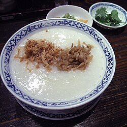

Chicken Congee

Description
Chicken congee is a savory rice porridge, traditionally made by simmering rice in a large amount of chicken broth or
stock until it breaks down into a creamy, soup-like consistency. It is a popular comfort food across many Asian
cultures and is often served for breakfast or as a light meal. The dish can be flavored with various seasonings and
topped with different garnishes like scallions, ginger, or soy sauce.
Ingredients
- 1L chicken stock
- 500ml water
- 4 slices fresh young ginger
- 1/2 cup long grain rice
- 200g chicken tenderloin, diced into 1cm pieces
- 1 tsp. Chinese rice wine
- Salt and ground white pepper
- 2 tbsp. finely sliced green onion
- 1/2 tsp. sesame oil
- 1 tbsp. fried shallots
- 2 tsp. fried garlic
- Soy sauce
Steps
- Bring the chicken stock, water and ginger to a boil in a large heavy based saucepan over a high heat. Add the rice
and reduce the heat to medium-low. Simmer steadily for 1 hour, covered stirring occasionally to prevent the rice
from catching until thickened and most of the liquid has been absorbed.
- Add the chicken to the congee, cover and simmer for 4-5 minutes or until the chicken is just cooked. Add the rice
wine to the congee and season to taste with salt and pepper.
- Serve the congee in bowls, sprinkle with the green onion, drizzle with sesame oil and top with the fried shallots
and garlic. Serve with soy sauce on the side.
Home